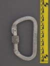
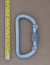
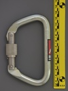
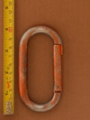
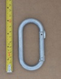

| Image | Summary | ||||
|---|---|---|---|---|---|
|  | SMC (large D) (screwlock) | asymmetric D | manual | gate stopped - unknown | full sized a'sym screwlock |
 | SMC D Locking (full-thread) | D | manual | other stopped | bi-directional locking due to full length thread |
 | SMC D Locking (half-thread) | D | manual | nose stopped - longitudinal interferance | vintage screw locker from an era when lockers were a luxury |
|  | SMC D Locking (proud nose) | D | manual | nose stopped | budget screw locker from an era when lockers were a luxury |
|  | SMC Large Steel Locking D | D | manual | gate stopped - unknown | large symmetric NFPA G Steel D |
|  | SMC Oval v1 (Orange) | oval | n/a | n/a | early unrated milled-nose oval in orange anodization |
|  | SMC Oval v2 | oval | n/a | n/a | early unrated stamped-nose oval |